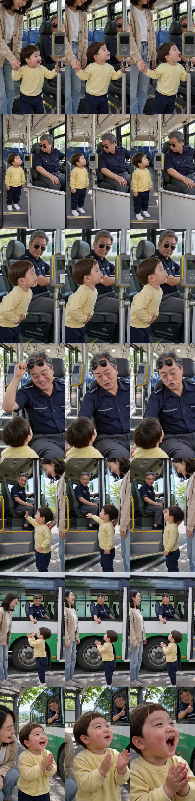

마을버스 선글라스 기사님께 두 살이 내리기 전에 한 일
허브 공통 파이프라인 새 소재 편 · 7컷 · 28.4초 · 대본에서 멈추지 않고 완성까지 진행 · 대표님 확인용(아직 등록 안 됨)
봐 주셔야 할 것 (✅ / ✏️ 로 답해 주세요)
1. 도윤이 «아저씨, 멋져!» 첫 3초가 웃긴가 — 첫 컷이 도윤이 외침으로 바로 시작합니다.
2. 기사님 반응(선글라스를 이마로 올리며 «아이고, 우리 도윤이가 최고 손님이네»)이 따뜻하게 읽히는가.
3. 도윤이 목소리·발음(2~4어절 «아저씨, 고마워!» «아저씨, 또 타!»)이 두 살처럼 들리는가.
4. 마지막 엄지척 + 박수 반전이 여운으로 남는가.
2. 기사님 반응(선글라스를 이마로 올리며 «아이고, 우리 도윤이가 최고 손님이네»)이 따뜻하게 읽히는가.
3. 도윤이 목소리·발음(2~4어절 «아저씨, 고마워!» «아저씨, 또 타!»)이 두 살처럼 들리는가.
4. 마지막 엄지척 + 박수 반전이 여운으로 남는가.
컷 프레임 (왼→오 0.3초·1.6초·3.0초)

컷별 실측
| 컷 | 대사 | 받아쓰기 | 길이 |
|---|---|---|---|
| 1 | 도윤 «아저씨, 멋져!» | 아저씨! 멋져! ✓ | 3.75초 |
| 2 | 없음(기사님 멈칫) | 원본에 «도요?» 말소리 → 편집에서 소리 껐음 | 3.75초 |
| 3 | 도윤 «아저씨, 고마워!» | 아저씨 고마워~ ✓ | 5.17초 |
| 4 | 기사 «아이고, 우리 도윤이가 최고 손님이네» | 같은 말 ✓ | 4.46초 |
| 5 | 도윤 «아저씨, 또 타!» | 아저씨! 또 타! ✓ | 3.75초 |
| 6 | 엄마 «기사님이 도윤이 덕에 힘 나셨겠다» | 같은 말 ✓ | 4.46초 |
| 7 | 도윤 «아저씨, 멋져!» | 아저씨! 멋져! ✓ | 3.75초 |
제가 본 걸리는 점 (장부에 기록, 편은 멈추지 않음)
· 3컷: 첫 프레임 밝기가 시작 그림의 0.59배 — 화면 밝기가 튈 수 있음
· 7컷: 다른 컷보다 노랗고 밝음(따뜻함 +17.9 · 밝기 1.17배)
· 2컷 말소리(편집에서 제거됨)
· 프레임상 인물·옷·기사님 선글라스·버스 내부는 컷마다 같게 보임
· 7컷: 다른 컷보다 노랗고 밝음(따뜻함 +17.9 · 밝기 1.17배)
· 2컷 말소리(편집에서 제거됨)
· 프레임상 인물·옷·기사님 선글라스·버스 내부는 컷마다 같게 보임
소재 출처: 82cook 자유게시판 14번 댓글 «울 큰애 세 살때». 등장인물은 AI 가상 인물이고 각색된 이야기입니다.